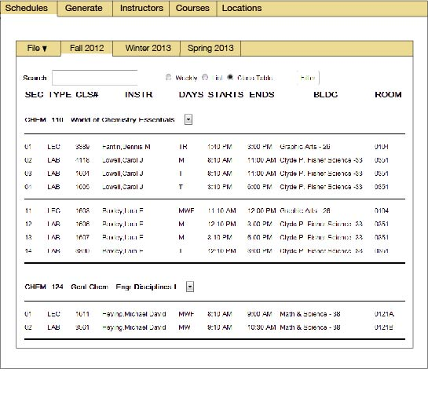
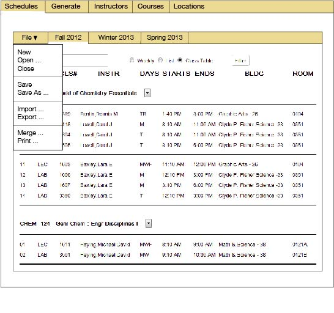
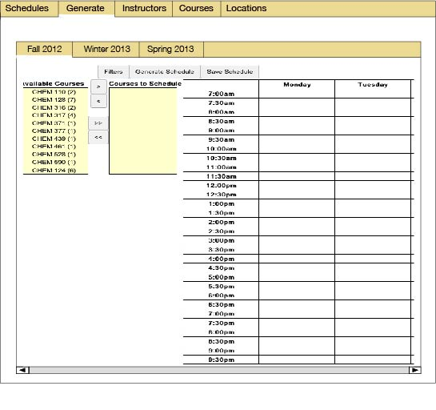
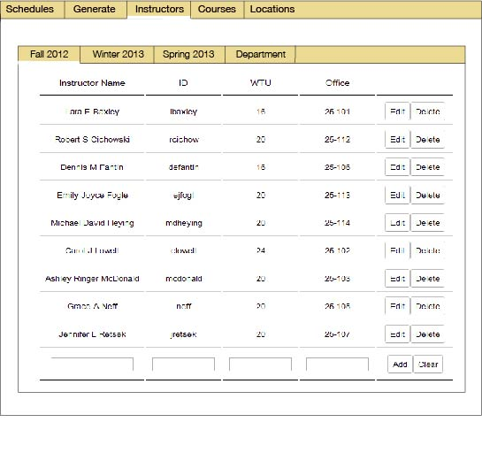

Scenario Sketch for 28 November Discussion
This scenario assumes that the user has opened and generated schedules for
three upcoming quarters, with Fall 2012 as the current working schedule.
Figure 1 shows the result of these user actions.

Figure 1: Fall 2012 as the current working schedule..
The 'File' menu contains commands related to creating and opening schedules. To the right of the 'File' menu are tabs for each open schedule. In the Figure, 'Fall 2012' is the current working schedule. The user selects another tab to select that schedule as the current working schedule. The content of the 'Fall 2012' tab is a screen shot of the current schedule viewing requirements.
When the user selects the 'File' menu, the program displays it as shown in
Figure 2.

Figure 2: File menu, with operational context being the Fall 2012 schedule..
When the user selects the 'Generate' tab in the main menu, the program displays
the editing window shown in Figure 3.

Figure 3: The generate window, with operational context being the Fall 2012 schedule..
When the user selects the 'Instructors' tab in the main window, the program
displays the editing window shown in Figure 4.

Figure 4: The instructors window, with operational context being the Fall 2012 schedule..
NOTE: The per-quarter tabbing scheme is effectively my answer to the "Master List" question. The sub-tabs in the inner window consistently contain all open schedules.